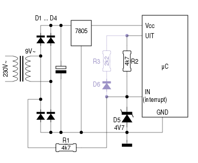

Als er een top-tien bestond van meestgebouwde mictocontroller-projecten, zouden klokken daar zeker in voorkomen. En niet zelden wordt de frequentie van het lichtnet daarbij als tijdbasis gebruikt. Geen slechte keus, want ondanks het feit dat deze frequentie op korte termijn enige afwijking kan vertonen, is ze op langere termijn heel stabiel.

Nu lijkt de netspanning helemaal niet op een mooie sinus.
Dimmers, motorregelingen, CAB-signalen1 en andere stoorbronnen maken er
een rommeltje van.
Die ongeregeldheden kan men er uitfilteren door
bijvoorbeeld een opamp in de signaallijn op te nemen, en er voor
te zorgen dat die een flinke hysteresis aan zijn ingang
heeft.
Het schema hiernaast toont een andere aanpak.
De ingangspin wordt zodanig ingesteld, dat er een interrupt optreedt bij elke op- of neergaande flank. Het eerste dat de ISR2 doet, is de status van de ingangspin controleren. Is deze hoog, dan wordt ook “UIT” hoog gemaakt. Nu moet de spanning op de secundaire trafo-wikkeling tot bijna 0V zakken, voor de ingang een negatieve flank ziet. Bij een interrupt op de neergaande flank wordt “UIT” laag gemaakt, waardoor de trafospanning tot 6V moet stijgen, alvorens er een opgaande flank gedetecteerd wordt.
Hierdoor hebben stoorpulsen tot enkele Volt geen vat op de goede werking van het geheel. Wie het onderste uit de kan wil halen, kan R3 en D6 toevoegen. Hierdoor moet de trafospanning tot 9V stijgen om een interrupt te veroorzaken. De waarde van R3 is hierbij afhankelijk van de trafo-spanning.
Het is aan te bevelen, om enkel de opgaande flanken (of enkel de neergaande flanken) als tijdbasis te gebruiken. De puls/pauze-verhouding is immers niet 50/50.